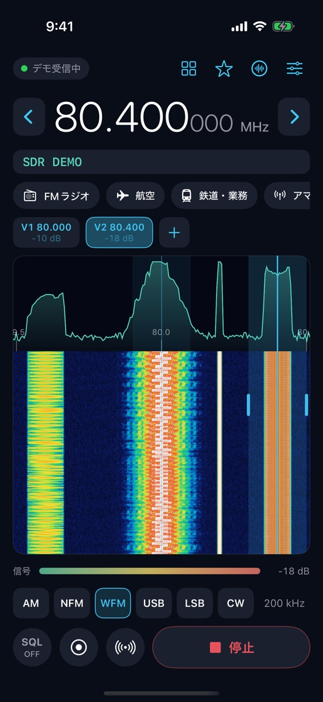
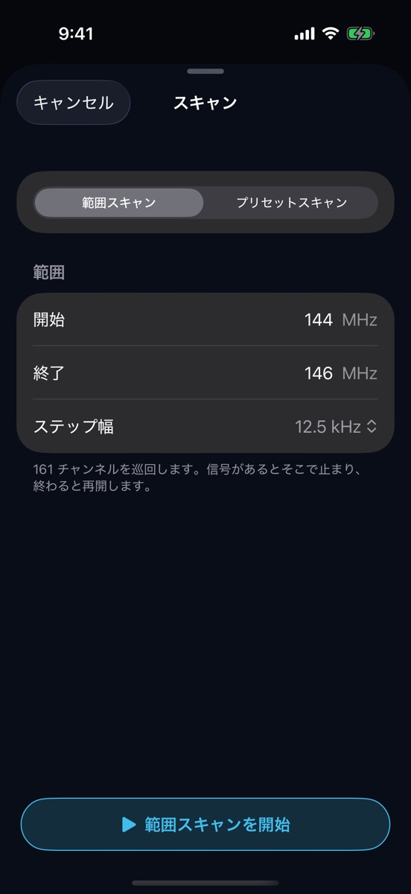
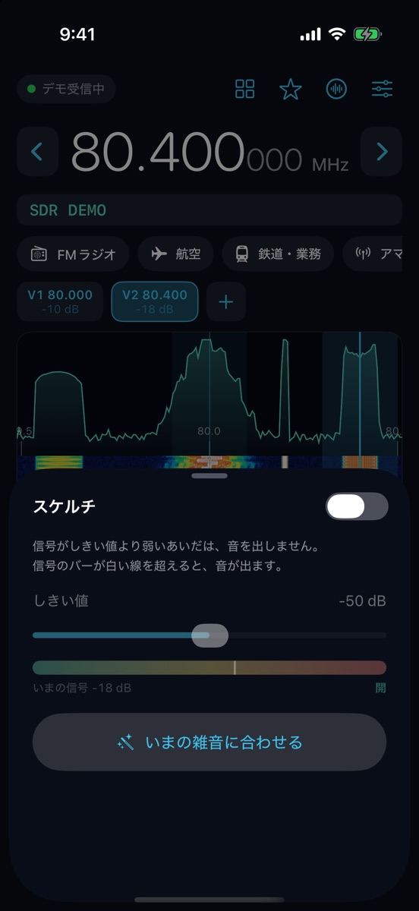

01 / Tune
画面に触れて合わせる
ウォーターフォールで気になる信号をタップすると、その周波数に飛びます。左右になぞれば 1 kHz ずつ動くので、細かい調整もそのまま指で。二本指で広げると、混み合った帯域を拡大できます。
rtl_tcp で動いている RTL-SDR に、Wi-Fi 越しにつなぐアプリです。電波の様子を見ながら、指で周波数を合わせられます。iPad では、大きな画面で電波を眺められます。
App Store 準備中
SDR で無線を聴くときは、たいてい PC の前に座ることになります。このアプリは、受信機を動かしている PC や Raspberry Pi に iPhone からつないで、ソファでも台所でも同じように聴けるようにするものです。
「FMラジオ」「航空」などの用途を選べば、モードや帯域幅、スケルチをまとめて設定します。細かく追い込みたくなったら、すべての設定をそのまま触れます。初めて開いたときは、画面の各ボタンを順に案内します。
Features
できることFM 放送、航空無線、アマチュア無線、業務無線など。受信機が拾える範囲なら、アナログの電波はだいたい聴けます。航空機や船舶の位置も地図で見られます。
ウォーターフォールで気になる信号をタップすると、その周波数に飛びます。左右になぞれば 1 kHz ずつ動くので、細かい調整もそのまま指で。二本指で広げると、混み合った帯域を拡大できます。
周波数を入れると、その帯でよく使われるモードを選んでくれます。FM 放送はステレオで聴けて、局名（RDS）も表示されます。
ボタンひとつで音声を録音できます。スケルチ連動にしておくと、交信があったあいだだけを録って、1 回ごとに別のファイルにします。電波そのものを残す IQ 録音もあります。
開始と終了の周波数を決めて順に回るか、保存しておいたチャンネルを巡回します。信号が入るとそこで止まり、静かになるとまた動き出します。
航空機の位置情報（ADS-B）と、船舶の自動識別信号（AIS）を受信して、地図に表示します。機体や船をタップすると、高度や速度などの詳細が出ます。アマチュア無線のデジタル通信 FT8 の解読にも対応しています。
横向きでは、左に操作、右に大きなスペクトラムとウォーターフォールを並べます。お気に入りの周波数も、左に並べて呼び出せます。縦向きにも対応しています。






iPhone や iPad に受信機を直接さすことはできないので、受信機はネットワーク上の PC か Raspberry Pi につないで使います。
RTL-SDR を PC や Raspberry Pi の USB にさして、アンテナを付けます。
rtl_tcp -a 0.0.0.0 のように、ほかの機器から接続できる形で起動します。
設定の「ソース」で rtl_tcp を選び、PC の IP アドレスとポート番号を入れます。
「FMラジオ」「航空」などの用途を選んで、受信ボタンを押します。
このアプリは受信だけを行い、電波を出すことはありません。
日本では電波法により、特定の相手に向けた無線通信を傍受したとき、その内容を他人に漏らしたり、自分のために使ったりすることが禁じられています。録音したデータも含めて、取り扱いは利用する方の責任でお願いします。
FAQ
よくある質問つなげません。PC や Raspberry Pi で rtl_tcp を動かして、そこにネットワーク経由でつなぎます。
使えます。iPad では横向きにすると、左に操作、右に大きなスペクトラムを並べた画面になります。縦向きにも対応しています。
試せます。アプリに「デモ信号」が入っていて、受信機がなくても画面の操作や録音を一通り確認できます。
航空機（ADS-B）は 1090 MHz、船舶（AIS）は 162 MHz 付近の電波を受信します。受信機とアンテナがその周波数に合っていて、近くに電波が飛んでいる必要があります。航空機の受信は 2 MS/s で行うため、Wi-Fi の通信量が増えます（約 4 MB/秒）。
今は対応していません。
聴けません。デジタル音声の方式には特許やライセンスの問題があるものが多く、このアプリではアナログ方式だけを扱っています。
受信できる周波数は受信機しだいです。一般的な RTL-SDR（R820T）なら、おおよそ 24〜1766 MHz です。短波帯の受信に使うダイレクトサンプリングには、まだ対応していません。
iPhone の中、このアプリの領域にだけ保存されます。外部に送られることはありません。共有するときは、その前に注意書きが表示されます。